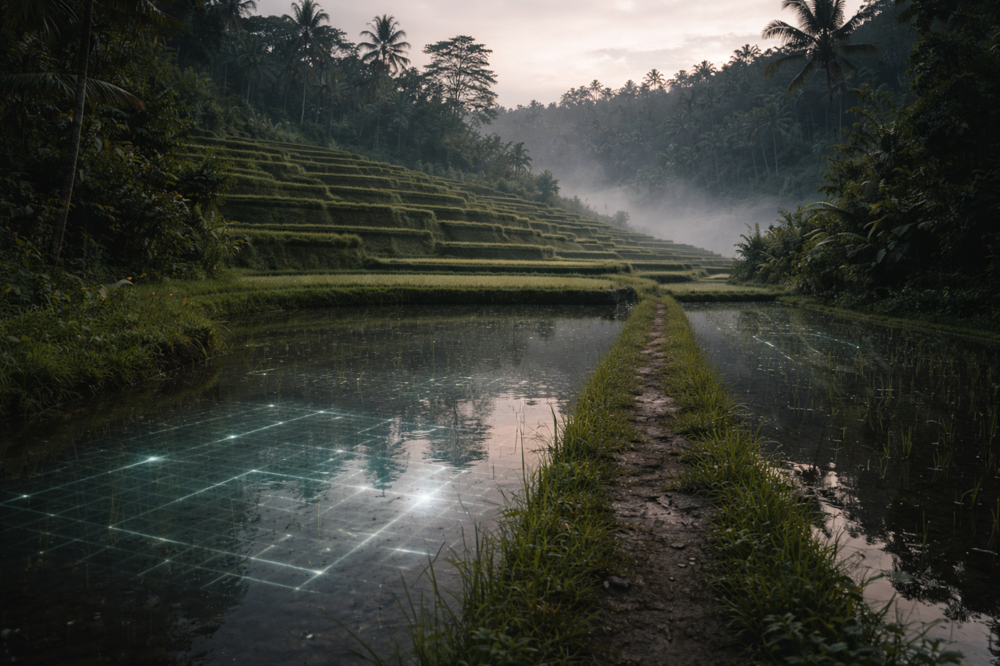
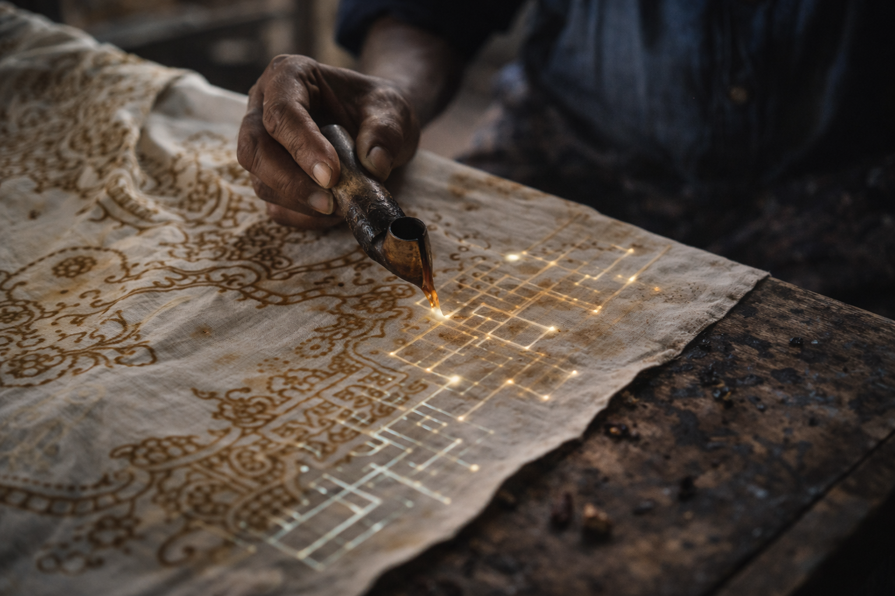
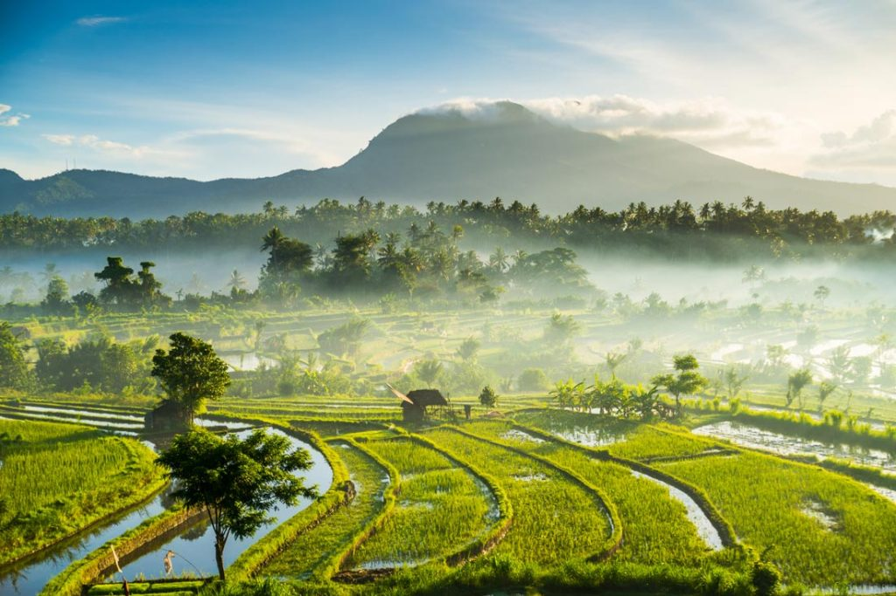
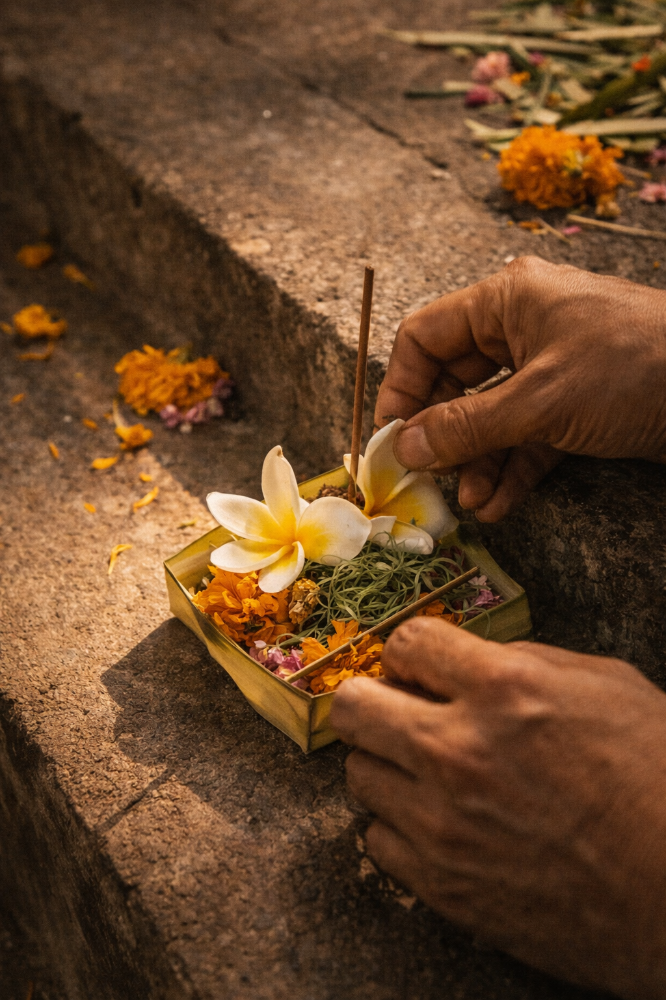
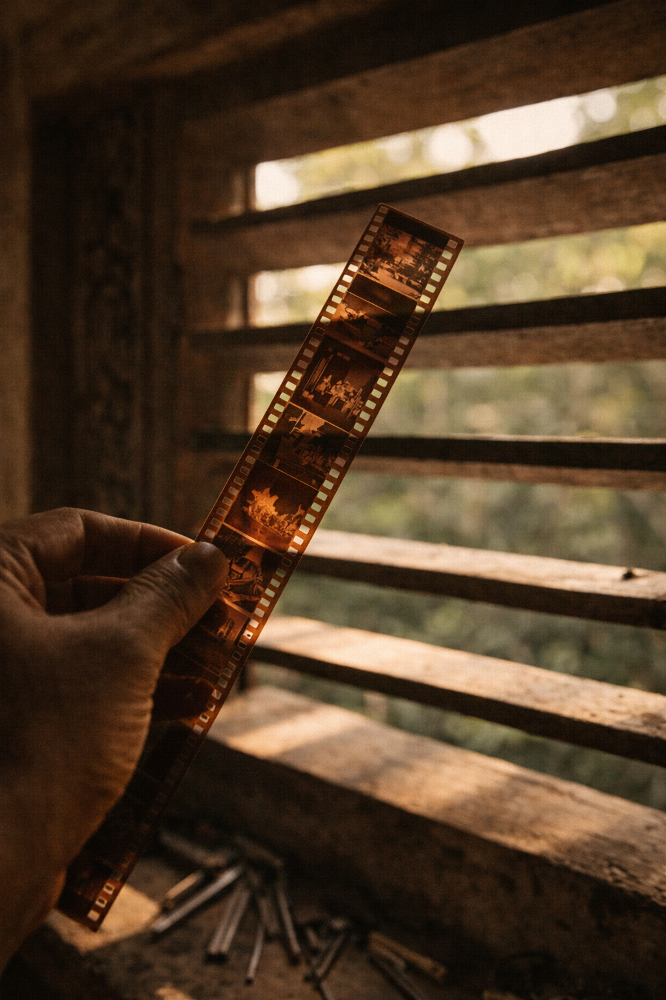

Bali Futures Forum — 20 July 2026
Suggested Programme
The Bali Futures Forum is an unconference. The sessions, their sequence, and their depth will be proposed and decided by participants on the morning. What follows is a suggested structure. Come with something to say.
This is a suggested schedule. As an unconference, the structure will be defined by participants on the day. Times are approximate.
Possible Session Themes
These are possible conversation themes — offered as provocations to help participants think about what they might want to bring.
These session descriptions are suggestions only. Participants will propose and vote on actual sessions on the morning of the forum.

Theme 01
What does it mean to practise futures well? This session explores foresight not as a methodology but as a discipline of making — one that develops over time, through failure, through iteration, and through the particular intelligence that only experience can build.

Theme 02
The field is increasingly asked to move fast, deliver at scale, and produce clarity in conditions that resist it. What gets lost when we accelerate? What would a more deliberate, more patient practice look like?
Theme 03
Batik, the resist-dye tradition of this region, is built through layered, repeated, unhurried gesture. Each immersion builds on the last. It cannot be rushed into existence. This session uses the craft as a provocation: what futures practices share this quality, and what might we learn from them?

Theme 04
Stuart Candy's work proposes that the most effective way to engage people with possible futures is to make those futures felt. Through artefacts, installations, and immersive environments, experiential futures collapses the temporal distance between now and what might be, making futures tangible enough for the body to take seriously. What do experiential approaches make possible that a scenario document cannot?
Theme 05
Language shapes what futures we can imagine. This session explores the relationship between how we write, speak, and narrate possible worlds — and what those choices foreclose or open up.

Theme 06
The gap between the foresight work practitioners actually do and what gets communicated upward, outward, or published. What do we leave out, and why? What would it look like to say the quiet part out loud?
Theme 07
Bring something we can see, touch, smell, hear, or taste that tells us about you beyond your futures practice. Weirdly specific hobbies and obsessions welcome.